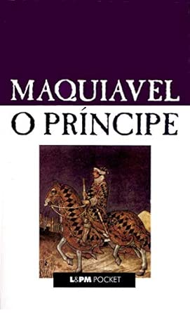

Aprender e Ser Curioso
Valorizo o aprendizado constante e acredito que a curiosidade, a criatividade e o foco são essenciais para inovar, resolver problemas e gerar valor em ambientes dinâmicos. Ter em mente que o aprendizado deva ser e, é essencial para manter-se sempre atualizado e inovando constantemente. A liberdade humana é conquistada através do conhecimento, conhecimento este que deve ser conquistado com um Estado forte, e uma sociedade Livre.

Minhas Habilidades.
Pacote Office
Domínio do Pacote Office, especialmente do Microsoft Excel, utilizado para análise de dados, desenvolvimento de dashboards, automação de planilhas e otimização de processos. Atuo como um solucionador de problemas, criando ferramentas e controles que apoiam equipes de diferentes áreas na tomada de decisões, no acompanhamento de indicadores e na melhoria contínua das operações.
Liderança
Experiência em liderança e análise de operações logísticas, com atuação em Armazém, Last Mile, Sort Center, Service Center e Transportes. Gestão de equipes, terceiros e motoristas, com foco em indicadores, melhoria contínua e alta performance. Resultados alcançados: +23% de produtividade, SLA elevado de 98% para 99% e 15% de redução nas falhas de processamento.
Análise de Dados
Experiência na gestão de KPIs e OKRs, utilizando análise de dados para apoiar decisões estratégicas e operacionais. Transformo dados em insights que promovem redução de custos, otimização de processos, automação e melhoria contínua, gerando resultados consistentes e maior eficiência operacional.
Otimização de Processos
Liderei a implantação de rotas, projetos logísticos e processos operacionais, incluindo participação em BIDs e estudos de viabilidade, com foco em eficiência, redução de custos e melhoria contínua. Atuei na otimização de malhas e rotas, aumento da produtividade da frota, automação de processos e integração de tecnologias para monitoramento operacional. Também desenvolvi dashboards e soluções de DataViz para acompanhamento de KPIs, análise de desempenho e suporte estratégico à tomada de decisões, contribuindo para resultados sustentáveis e maior eficiência das operações.
Logística
Profissional de operações logísticas com experiência em Sort Center (GIG7 Amazon) e forte vivência no e-commerce, atuando ponta a ponta na cadeia logística, incluindo First Mile, Last Mile, Coletas, Reversa e operações de apoio (Área da Saúde). Atuação em treinamento de equipes, suporte operacional e melhoria contínua de processos, com foco em qualidade, eficiência e padronização operacional. Experiência em captação, roteirização, escala, monitoramento, gestão de indicadores, expedição e pagamentos operacionais, garantindo controle e fluidez das operações em ambientes de alta demanda. Responsável pela implantação de processos e desenvolvimento de equipes operacionais, contribuindo para aumento de produtividade, redução de falhas e melhoria contínua dos resultados no curto e longo prazo.
Resiliência
Atuando na área de logística, desenvolvi resiliência, adaptabilidade e pensamento analítico rápido, competências essenciais em ambientes dinâmicos que exigem alinhamento entre diferentes áreas, como gestão de estoques, transportadoras e equipes operacionais. Ao integrar visão estratégica com análise operacional, consigo atuar na resolução de problemas do dia a dia, identificar oportunidades de melhoria contínua e contribuir para a geração de resultados consistentes e sustentáveis para a operação.

Sejam bem-vindos! Sou Rafael Santos.
Sou um profissional de logística com vasta experiência em operações de E-commerce, Last Mile e Sort Center. Minha carreira é marcada pela capacidade de liderar equipes e conduzir projetos estratégicos e operacionais. Meu principal diferencial é a visão analítica orientada a dados, que me permite alinhar estratégia e execução para otimizar processos, reduzir custos e alcançar resultados consistentes. Fui premiado por desenvolver um checklist para frota em Excel, uma das minhas diversas iniciativas de melhoria contínua que geram valor em ambientes dinâmicos.
"Liderança, análise de dados e foco em melhoria contínua: os pilares que utilizo para garantir a eficiência e o crescimento sustentável de operações logísticas."
Meu Portfólio.
Minhas leituras e Recomendações.
A Sabedoria de Winston Churchill
Winston Churchill, um dos maiores estadistas da história, fez da Segunda Guerra Mundial o seu maior desafio. Contrariando as expectativas de muitos com seu comportamento excêntrico, ele provou o seu valor: não apenas venceu o conflito ao lado dos Aliados, mas também liderou uma nação que se manteve forte, íntegra e focada no crescimento e na preservação de sua independência.

Dale Carnegie e Associados
Em um mundo digital e acelerado, este livro adapta os clássicos princípios de Dale Carnegie para os desafios modernos. Longe de fórmulas mágicas, a obra foca em liderança humanizada: como conquistar o respeito, engajar equipes através da motivação espontânea e gerenciar crises com empatia e firmeza. Um guia prático essencial para quem deseja transformar conexões profissionais em relações humanas genuínas e de alto impacto.

Liderança segundo MArgaret Thatcher
Analisando a trajetória da "Dama de Ferro", Nile Gardiner e Stephen Thompson mostram como princípios liberais e conservadores se traduzem em práticas de sucesso. Primeira-ministra do Reino Unido, Thatcher desafiou o desdém de seu próprio partido e moldou a geopolítica global ao lado de Ronald Reagan e João Paulo II. Um estudo indispensável sobre coragem, inteligência estratégica e convicção, que serve como um guia poderoso para os desafios de liderança e empreendedorismo na atualidade.

O Príncipe — Nicolau Maquiavel
Escrito no século XVI a partir da experiência do autor na corte de César Bórgia, este clássico imortalizou uma visão cética e pragmática da natureza humana e da política. Maquiavel analisa o poder pelo viés da prática acima da ética, argumentando que a manutenção do Estado justifica os meios empregados. Uma obra indispensável e frequentemente criticada em público, mas seguida à risca nos bastidores do poder há quase quinhentos anos.

O Caibalion — Filosofia Hermética
Considerado um dos pilares do esoterismo ocidental, este clássico sintetiza a essência dos ensinamentos de Hermes Trismegisto, preservados desde o Antigo Egito e a Grécia. A obra traduz axiomas complexos em conceitos compreensíveis, antecipando ideias modernas como o Novo Pensamento e a Lei da Atração. Um guia definitivo e autorizado sobre o Hermetismo, indispensável para estudiosos, filósofos e entusiastas da filosofia oculta.
O Existencialismo é um Humanismo — Jean-Paul Sartrea
Nascido a partir de uma célebre conferência, este texto funciona como uma porta de entrada acessível à filosofia de Sartre. O autor responde de forma direta aos seus críticos, defendendo o existencialismo como uma doutrina que coloca a responsabilidade e a liberdade humana no centro de tudo. Uma obra curta e essencial que marca a transição intelectual de Sartre e pavimenta o caminho para os seus desdobramentos filosóficos posteriores.